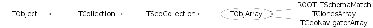

class TObjArray: public TSeqCollection
TObjArray An array of TObjects. The array expands automatically when objects are added (shrinking can be done by hand using Expand(), how nice to have meaningful names -:)). Use operator[] to have "real" array behaviour. Note on ownership and copy: By default the TObjArray does not own the objects it points to and will not delete them unless explicitly asked (via a call to the Delete member function). To assign ownership of the content to the array, call: myarr->SetOwner(kTRUE); When the array owns its content a call to Clear or the deletion of the array itself will lead to the deletion of its contents. You can either make a shallow copy of the array: otherarr = new TObjArray(*myarr); *otherarr = *myarr; in which case ownership (if any) is not transfered but the other array points to the same object as the original array. Note that if the content of either array is deleted the other array is not notified in any way (i.e. still points to the now deleted objects). You can also make a deep copy of the array: otherarr = (TObjArray*)myarr->Clone(); in which case the array and the content are both duplicated (i.e. otherarr and myarr do not point to the same objects). If myarr is set to the be the owner of its content, otherarr will also be set to the owner of its own conent./*
 */
*/
Function Members (Methods)
public:
protected:
| Bool_t | BoundsOk(const char* where, Int_t at) const |
| virtual void | TSeqCollection::Changed() |
| virtual void | TObject::DoError(int level, const char* location, const char* fmt, va_list va) const |
| Int_t | GetAbsLast() const |
| virtual const char* | TCollection::GetCollectionEntryName(TObject* entry) const |
| void | Init(Int_t s, Int_t lowerBound) |
| void | TObject::MakeZombie() |
| Bool_t | OutOfBoundsError(const char* where, Int_t i) const |
| virtual void | TCollection::PrintCollectionEntry(TObject* entry, Option_t* option, Int_t recurse) const |
| virtual void | TCollection::PrintCollectionHeader(Option_t* option) const |
Data Members
public:
| enum TCollection::[unnamed] { | kIsOwner | |
| kInitCapacity | ||
| kInitHashTableCapacity | ||
| }; | ||
| enum TObject::EStatusBits { | kCanDelete | |
| kMustCleanup | ||
| kObjInCanvas | ||
| kIsReferenced | ||
| kHasUUID | ||
| kCannotPick | ||
| kNoContextMenu | ||
| kInvalidObject | ||
| }; | ||
| enum TObject::[unnamed] { | kIsOnHeap | |
| kNotDeleted | ||
| kZombie | ||
| kBitMask | ||
| kSingleKey | ||
| kOverwrite | ||
| kWriteDelete | ||
| }; |
protected:
| TObject** | fCont | !Array contents |
| Int_t | fLast | Last element in array containing an object |
| Int_t | fLowerBound | Lower bound of the array |
| TString | TCollection::fName | name of the collection |
| Int_t | TCollection::fSize | number of elements in collection |
| Bool_t | TSeqCollection::fSorted | true if collection has been sorted |
Class Charts
{kind=link}
{kind=link}
{kind=link}
{kind=link}

Function documentation
TObjArray(Int_t s = TCollection::kInitCapacity, Int_t lowerBound = 0)
Create an object array. Using s one can set the array size (default is kInitCapacity=16) and lowerBound can be used to set the array lowerbound index (default is 0).
TObject *& operator[](Int_t i)
Return the object at position i. Returns address at position 0 if i is out of bounds. Result may be used as an lvalue.
TObject * operator[](Int_t i) const
Return the object at position at. Returns 0 if i is out of bounds.
void AddFirst(TObject* obj)
Add object in the first slot of the array. This will overwrite the first element that might have been there. To have insertion semantics use either a TList or a TOrdCollection.
void AddBefore(const TObject* before, TObject* obj)
Add object in the slot before object before. If before=0 add object in the first slot. Note that this will overwrite any object that might have already been in this slot. For insertion semantics use either a TList or a TOrdCollection.
void AddAfter(const TObject* after, TObject* obj)
Add object in the slot after object after. If after=0 add object in the last empty slot. Note that this will overwrite any object that might have already been in this slot. For insertion semantics use either a TList or a TOrdCollection.
void AddAtAndExpand(TObject* obj, Int_t idx)
void AddAt(TObject* obj, Int_t idx)
Add object at position ids. Give an error when idx is out of bounds (i.e. the array is not expanded).
Int_t AddAtFree(TObject* obj)
Return the position of the new object. Find the first empty cell or AddLast if there is no empty cell
TObject * After(const TObject* obj) const
Return the object after obj. Returns 0 if obj is last object.
TObject * Before(const TObject* obj) const
Return the object before obj. Returns 0 if obj is first object.
void Delete(Option_t* option = "")
Remove all objects from the array AND delete all heap based objects.
TObject * FindObject(const char* name) const
Find an object in this collection using its name. Requires a sequential scan till the object has been found. Returns 0 if object with specified name is not found.
TObject * FindObject(const TObject* obj) const
Find an object in this collection using the object's IsEqual() member function. Requires a sequential scan till the object has been found. Returns 0 if object is not found. Typically this function is overridden by a more efficient version in concrete collection classes (e.g. THashTable).
Int_t GetEntries() const
Return the number of objects in array (i.e. number of non-empty slots). Attention: use this method ONLY if you want to know the number of non-empty slots. This function loops over the complete array and is therefore very slow when applied in a loop. Most of the time you better use GetEntriesFast() (only in case when there are no empty slots).
Int_t GetAbsLast() const
Return absolute index to last object in array. Returns -1 in case array is empty.
Int_t GetLast() const
Return index of last object in array. Returns lowerBound-1 in case array is empty.
TObject ** GetObjectRef(const TObject* obj) const
Return address of pointer obj. If obj is 0 returns address of container.
Int_t IndexOf(const TObject* obj) const
obj != 0 Return index of object in array.
Returns lowerBound-1 in case array doesn't contain the obj.
obj == 0 Return the index of the first empty slot.
Returns lowerBound-1 in case array doesn't contain any empty slot.
Bool_t OutOfBoundsError(const char* where, Int_t i) const
Generate an out-of-bounds error. Always returns false.
void RecursiveRemove(TObject* obj)
Remove object from this collection and recursively remove the object from all other objects (and collections).
void SetLast(Int_t last)
Set index of last object in array, effectively truncating the array. Use carefully since whenever last position has to be recalculated, e.g. after a Remove() or Sort() it will be reset to the last non-empty slot. If last is -2 this will force the recalculation of the last used slot. If last is -1, this effectively truncate the array completely.
void Randomize(Int_t ntimes = 1)
Randomize objects inside the array, i.e. permute randomly objects. With fLast being the index of the last entry in the array, the following algorithm is applied to the array: - for each entry j between 0 and fLast, another entry k is chosen randomly between 0 and fLast. - the objects at j and k are swapped. - this process is repeated ntimes (ntimes = 1 by default).
void Sort(Int_t upto = kMaxInt)
If objects in array are sortable (i.e. IsSortable() returns true for all objects) then sort array.
Int_t BinarySearch(TObject* obj, Int_t upto = kMaxInt)
Find object using a binary search. Array must first have been sorted. Search can be limited by setting upto to desired index.
Int_t GetEntriesFast() const